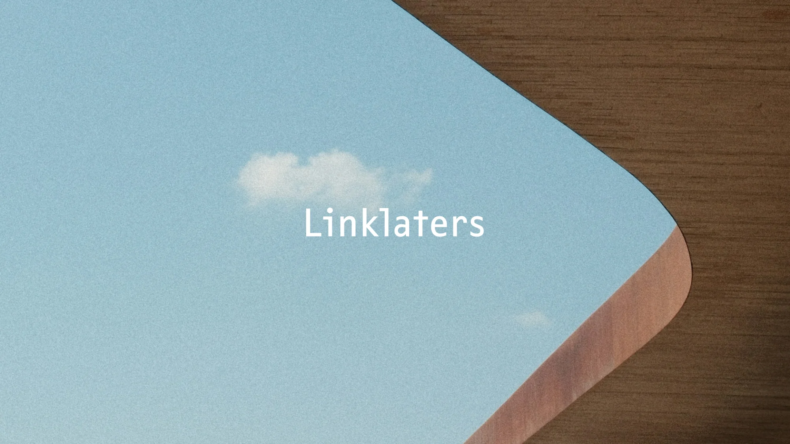

1.
Linklaters × UNRVLD
Visual Identity, with UNRVLD
Linklaters
In-house brand advocate and rollout lead
UNRVLD led the refresh of the Linklaters visual identity, rebuilding the colour and type system across the website. I sat on the in-house creative team as the brand’s advocate, then rolled the new system out across the firm’s production work.
[More..]
Linklaters
In-house brand advocate and rollout lead
UNRVLD led the refresh of the Linklaters visual identity, rebuilding the colour and type system across the website. I sat on the in-house creative team as the brand’s advocate, then rolled the new system out across the firm’s production work.
[More..]